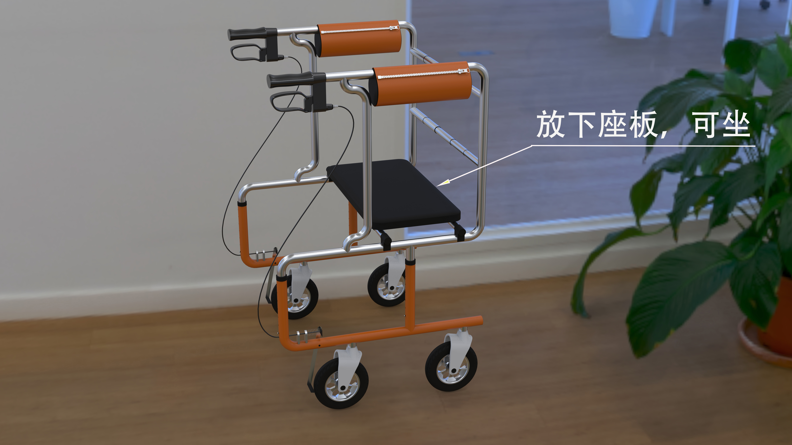
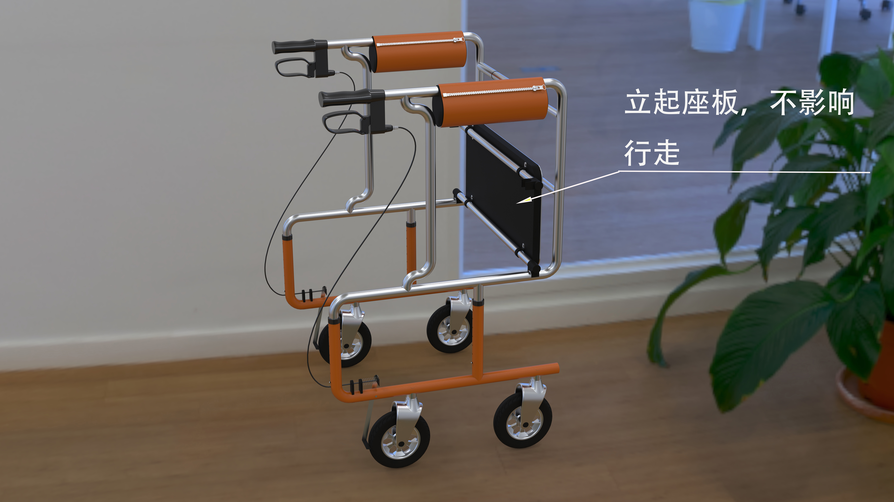
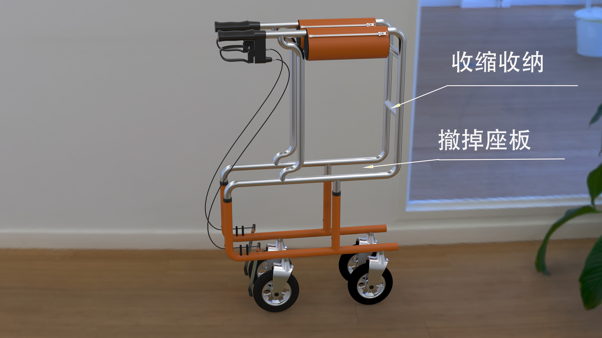
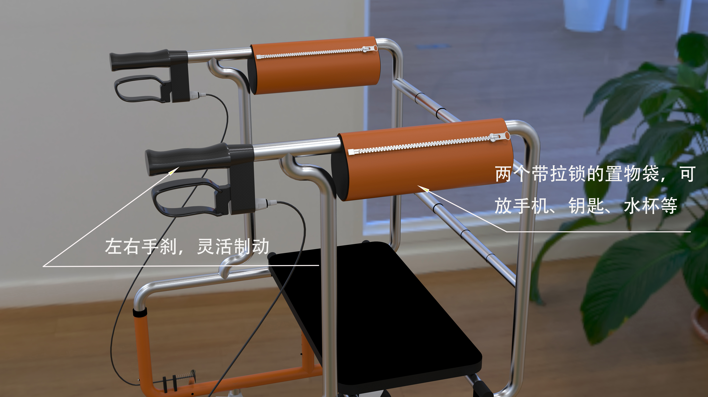
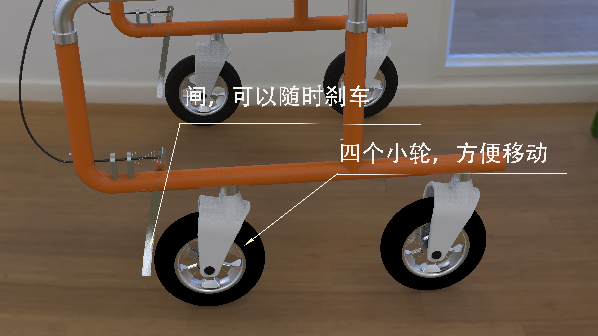
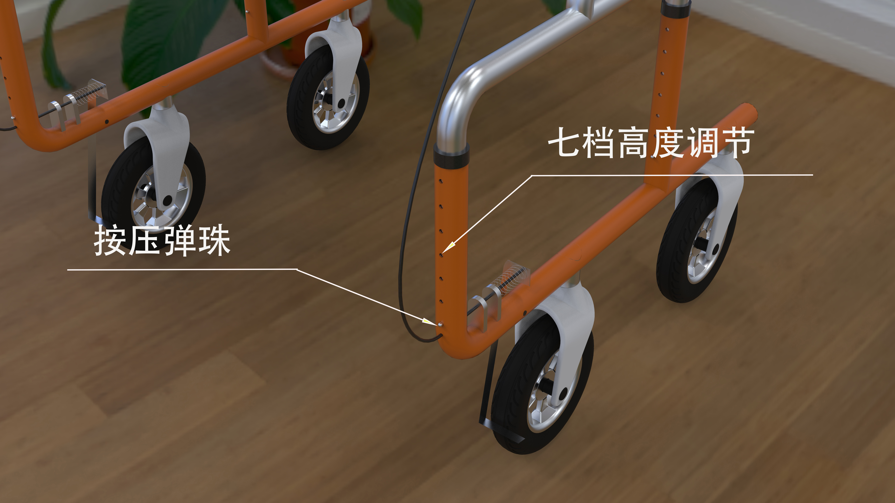

“倚杖”面向轻度行动不便人群，以家具化语言重构居家助行器形态。 在保留支撑稳定性的前提下，弱化医疗符号，使产品自然融入居住空间， 兼顾功能性、安全感与使用尊严。
574 × 490 × 810–950 mm
4.2 kg
≤ 120 kg
轻度行动不便者
铝合金 / ABS工程塑料
7档高度调节






弱化医疗属性，融入居家环境。
四点支撑，提升安全感。
橙、银、黑色搭配有活力、有亲切感，不像医疗器械。
适配不同身高与多场景使用。
设计初期将“倚杖”定位为介于家具与辅具之间的第三类产品。 结构上通过低重心提升稳定性； 形态上通过独特的色彩设计与柔和倒角削弱机械感， 最终实现“可用、可信、可居”的产品气质。